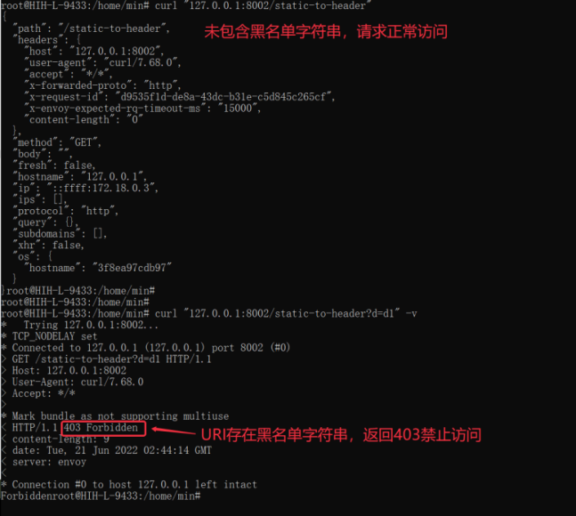

Hango网关自定义插件使用教程¶
一、插件需求¶
实现一个URI黑白名单插件。支持控制台配置URI黑名单/白名单。
二、编写lua插件、调试¶
2.1 rider开发¶
rider是hango团队开源的自定义插件包，通过rider结合envoy热加载能力，动态扩展自定义插件。
（1）2.1.1 在rider根目录下，建立plugins/uri-restriction.lua 目录用于存放插件代码
创建plugins/uri-restriction.lua，添加如下代码
包括两部分：插件schema配置以及插件执行逻辑配置；schema配置又可以分为base_json_schema全局配置以及route_json_schema路由配置。全局配置用于配置插件的公共配置，例如外部认证服务等全局配置；路由配置为插件的核心配置，大多数场景只需要编写route_json_schema即可。
插件执行逻辑，依赖rider封装的sdk，进行对应的插件链路开发。我们的例子便是，对请求URI进行黑白名单控制；当请求URI中的字符符合白名单规则，优先放行；若请求URI中的字符未匹配白名单规则且匹配黑名单规则，则请求返回403错误码，并相应Forbidden字符串
--[[
引入v2 rider版本
v2版本相对v1版本将request和response分为header和body部分处理，提升不同场景的插件性能
-- ]]
require('rider.v2')
-- 定义本地变量
local envoy = envoy
local request = envoy.req
local respond = envoy.respond
-- 定义本地常量
local NO_MATCH = 0
local MATCH_WHITELIST = 1
local MATCH_BLACKLIST = 2
local BAD_REQUEST = 400
local FORBIDDEN = 403
local uriRestrictionHandler = {}
uriRestrictionHandler.version = 'v2'
local json_validator = require('rider.json_validator')
-- 定义全局配置
local base_json_schema = {
type = 'object',
properties = {}
}
-- 定义路由级配置
local route_json_schema = {
type = 'object',
properties = {
allowlist = {
type = 'array',
items = {
type = 'string'
}
},
denylist = {
type = 'array',
items = {
type = 'string'
}
}
}
}
json_validator.register_validator(base_json_schema, route_json_schema)
-- 定义本地校验uri黑白名单方法
local function checkUriPath(uriPath, allowlist, denylist)
if allowlist then
for _, rule in ipairs(allowlist) do
envoy.logDebug('allowist: compare ' .. rule .. ' and ' .. uriPath)
if string.find(uriPath, rule) then
return MATCH_WHITELIST
end
end
end
if denylist then
for _, rule in ipairs(denylist) do
envoy.logDebug('denylist: compare ' .. rule .. ' and ' .. uriPath)
if string.find(uriPath, rule) then
return MATCH_BLACKLIST
end
end
end
return NO_MATCH
end
-- 定义request的header阶段处理函数
function uriRestrictionHandler:on_request_header()
local uriPath = request.get_header(':path')
local config = envoy.get_route_config()
envoy.logInfo('start lua uriRestriction')
if uriPath == nil then
envoy.logErr('no uri path!')
return
end
-- 配置未定义报错
if config == nil then
envoy.logErr('no route config!')
return
end
local match = checkUriPath(uriPath, config.allowlist, config.denylist)
envoy.logDebug('on_request_header, uri path: ' .. uriPath .. ', match result: ' .. match)
if match > 1 then
envoy.logDebug('path is now allowed: ' .. uriPath)
return respond({[':status'] = FORBIDDEN}, 'Forbidden')
end
end
return uriRestrictionHandler
2.2 rider 调试¶
修改script/dev/envoy.yaml文件，增加对应的http_filter配置，具体如下：
- name: proxy.filters.http.rider
typed_config:
"@type": type.googleapis.com/proxy.filters.http.rider.v3alpha1.FilterConfig
plugin:
vm_config:
package_path: "/usr/local/lib/rider/?/init.lua;/usr/local/lib/rider/?.lua;"
code:
local:
filename: /usr/local/lib/rider/plugins/uri-restriction.lua
name: uri-restriction.lua
config: {}
增加对应route配置，具体配置如下：
typed_per_filter_config:
proxy.filters.http.rider:
"@type": type.googleapis.com/proxy.filters.http.rider.v3alpha1.RouteFilterConfig
plugins:
- name: uri-restriction
config:
denylist:
- d1
执行./scripts/dev/local-up.sh 启动 hango-gateway和一个简单的 HTTP 服务。
通过curl -v http://localhost:8002/static-to-header

response: 403 Foebidden
2.3 控制台schema开发¶
通过开发对应的插件schema，可以将插件暴露至网关控制台，便于用户进行配置。
通过编写json schema，将对应的uri-restriction插件暴露在hango控制台。前端schema开发可以参考schema开发手册.md。
根据需求，开发uri-restriction 前端schema如下：
{
"formatter": {
"kind": "uri-restriction",
"type": "lua",
"config": {
"allowlist": "&allowlist",
"denylist": "&denylist"
}
},
"layouts": [
{
"key": "allowlist",
"alias": "白名单",
"help": "URI优先匹配白名单，命中之后直接放行，支持正则",
"type": "multi_input",
"rules": [
]
},
{
"key": "denylist",
"alias": "黑名单",
"help": "URI优先匹配白名单，没有命中，继续匹配黑名单，命中之后直接禁止，支持正则",
"type": "multi_input",
"rules": [
]
}
]
}
三、集成插件至hango¶
3.1 集成插件至hango-envoy¶
（1）在rider目录下，执行
kubectl create configmap hango-rider-plugin --from-file=plugins/ -n hango-system
（2）等待10s左右，即将对应的plugins加载至hango-gateway中
3.2 集成插件至api-palne¶
（1）明确插件的级别
hango网关自定义插件支持两种级别：全局级别和路由级别；全局级别即整个网关级别，生效顺序是优先路由级插件生效。
全局配置入口为：【插件管理】-> 【添加全局插件】。配置一个全局插件后，该网关的所有路由均生效
路由级别配置入口为：【已发布信息】-> 【已发布路由】-> 【插件】-> 【添加全局插件】。配置一个路由级插件后，仅对当前路由生效。
（2）修改api-plane工程 /plugin/route 目录下的plugin-config.json增加对应的插件声明
{
"name": "uri-restriction",
"displayName": "URI黑白名单",
"schema": "plugin/route/uri-restriction.json",
"description": "URI黑白名单插件",
"processor": "AggregateGatewayPluginProcessor",
"author": "system",
"createTime": "1655279630000",
"updateTime": "1655279630000",
"pluginScope": "global,routeRule",
"pluginPriority": "3000",
"instructionForUse": "URI黑白名单插件",
"categoryKey": "security",
"categoryName": "安全"
}
(3) 在/plugin/route目录下增加uri-restriction.json schema文件
---uri-restriction.json
{
"formatter": {
"kind": "uri-restriction",
"type": "lua",
"config": {
"allowlist": "&allowlist",
"denylist": "&denylist"
}
},
"layouts": [
{
"key": "allowlist",
"alias": "白名单",
"help": "URI优先匹配白名单，命中之后直接放行，支持正则",
"type": "multi_input",
"rules": [
]
},
{
"key": "denylist",
"alias": "黑名单",
"help": "URI优先匹配白名单，没有命中，继续匹配黑名单，命中之后直接禁止，支持正则",
"type": "multi_input",
"rules": [
]
}
]
}
(4) 执行以下指令，生成对应的插件configmap
kubectl create configmap hango-plugin --from-file=plugin/route/ -n hango-system
(5) 等待大约10s，待configmap加载成功即可以使用自定义插件。